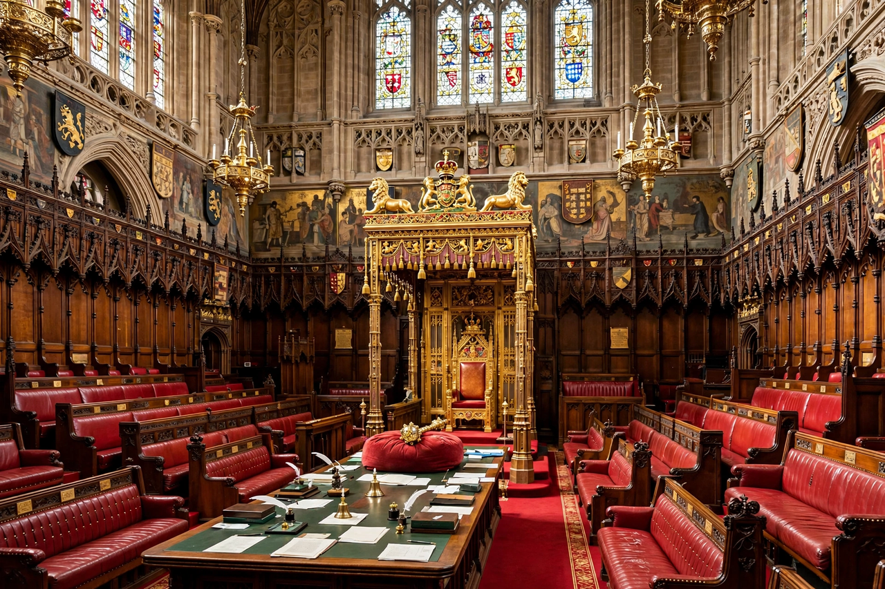

House of Lords reform refers to the long-running process of proposals and legislation intended to change the composition, powers and method of appointment or election of the House of Lords, the upper house of the Parliament of the United Kingdom. Reform efforts stretch from the early twentieth century to the present day and have repeatedly foundered on disagreements over whether the chamber should be appointed, elected, or a mixture of the two.
| House of Lords reform | |
| Legislature | Parliament of the United Kingdom |
|---|---|
| Key statutes | Parliament Acts 1911 and 1949; Life Peerages Act 1958; Peerage Act 1963; House of Lords Act 1999; Constitutional Reform Act 2005 |
| Status | Ongoing; most hereditary peers removed in 1999, further reform repeatedly proposed |

The chamber of the House of Lords in the Palace of Westminster.
For most of its history the House of Lords was composed predominantly of hereditary peers, together with the Lords Spiritual (senior bishops of the Church of England) and the Law Lords. Because membership passed by inheritance, the chamber had an inbuilt Conservative majority for much of the modern era, which brought it into repeated conflict with the elected House of Commons.
The crisis of 1909–1911, when the Lords rejected the Liberal government's "People's Budget", led to the Parliament Act 1911, which removed the Lords' power to veto money bills and replaced their absolute veto over other legislation with a suspensive veto of two years. Its preamble declared an intention to substitute "a Second Chamber constituted on a popular instead of hereditary basis", but no such chamber was created. The Parliament Act 1949 reduced the delaying power to one year. See also the Parliament Acts.
The Life Peerages Act 1958 introduced life peerages, allowing the appointment of peers for life only, and for the first time admitted women to the Lords on equal terms. The Peerage Act 1963 allowed hereditary peers to disclaim their peerages and admitted all Scottish peers and hereditary peeresses. In 1968 the Labour government of Harold Wilson attempted a comprehensive reform (the Parliament (No. 2) Bill), which was defeated by an unusual alliance of opponents from both left and right.
The House of Lords Act 1999, passed by Tony Blair's Labour government, removed all but 92 hereditary peers, who were retained as a temporary compromise (the "Weatherill amendment") pending a second stage of reform. A Royal Commission chaired by Lord Wakeham reported in 2000, recommending a partly elected chamber, but the government did not implement it. Free votes in the Commons in 2003 and 2007 failed to produce agreement on a single model, although in 2007 MPs voted in principle for a wholly elected second chamber. The Constitutional Reform Act 2005 removed the judicial functions of the Lords, creating the Supreme Court of the United Kingdom in 2009.
The House of Lords Reform Bill 2012, championed by Deputy Prime Minister Nick Clegg, would have created a chamber of 450 members, 80 per cent elected by proportional representation for single 15-year terms. It was abandoned in August 2012 after a rebellion by Conservative backbenchers. Smaller statutory changes followed: the House of Lords Reform Act 2014 allowed members to retire and provided for expulsion for non-attendance or serious criminal conviction, and the House of Lords (Expulsion and Suspension) Act 2015 extended those powers. Subsequent debate has focused on the size of the House — with more than 800 members, one of the largest legislative chambers in the world — the Prime Minister's patronage, and renewed proposals by the Labour Party to replace the Lords with an elected assembly of the nations and regions.
Supporters of election argue that a legislative chamber exercising real power should derive its authority from the voters, and that appointment is open to cronyism. Defenders of appointment argue that the Lords' value lies in the expertise and independence of its members, that election would create a rival to the Commons and produce constitutional gridlock, and that an appointed chamber can be made more representative of the wider population than an elected one.